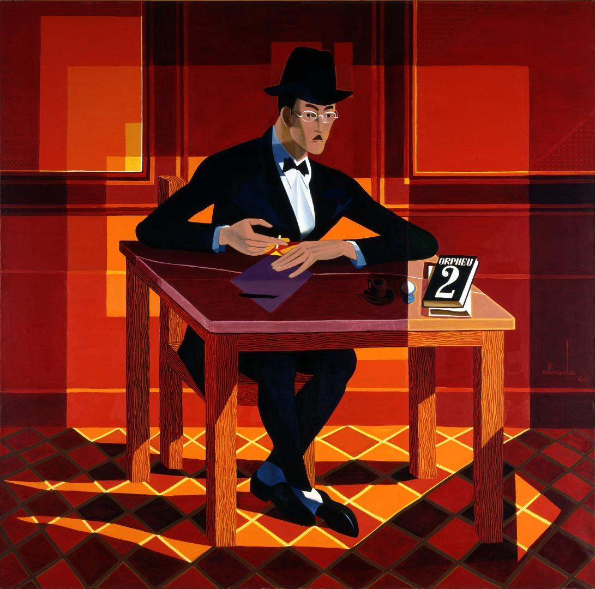

"All art is a form of literature because all art says something. There are two forms of saying something – to speak and to keep quiet.
Forms other than literature are projections of an expressive silence. In all art that isn’t literature one must look for the silent sentence contained within the art, or the silent poem or novel or drama. When we say a “symphonic poem” that’s exactly what we mean, it’s not a figurative or lazy label.
Things would appear to be less straightforward with the visual arts, but if we prepare ourselves by considering lines, planes, shapes, colours, juxtapositions and counterpoints as verbal phenomenon, communicated without words or even spiritual hieroglyphics, then we’ll come to understand how to understand the visual arts, and even if we still don’t then understand them, we’ll at least have within our power the book that contains the cipher and a soul that may contain the decipher.
That’ll do until the rest comes."
Alvaro de Campos, “Another Random Note,”
1st publ. in presence, no. 48, Coimbra, July 1936
Curated by the Museo Reina Sofia, Madrid
When I was a younger I thought art was dumb. As a relatively practical person, I really didn't see the point. If we can produce photographs of things, why do we need something abstracted? It seemed like a holdover of the pre-camera era. Going to museums I thought was sort of interesting - if just to see what people were doing before cameras. Fortunately, as a still relatively young individual, I came upon the above passage written on the wall of of a museum in Madrid. I was so taken aback by the writing. A lightbulb went off in my head, and a whole world opened. I spent a few hours in that museum, wandering around in awe. As dumb as it is, I simply hadn't considered that art, similar to a book, was a medium to tell you something. The shape of a clock in a still life can say something, similar to how a short story from hemingway evokes a feeling. Each brush stroke is a word. Since then, I have made it a point to see one new museum in each city I visit, and I try to collect art for my dwelling. Below, I show some art I have found interesting.